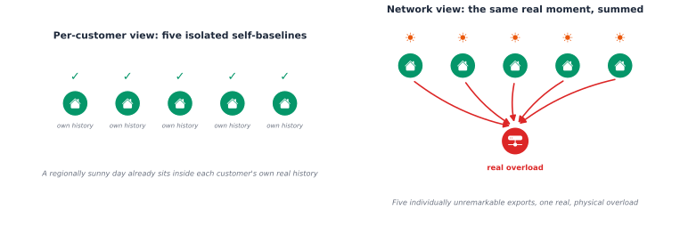

one customer's one day: (48,) raw readings -> (54,) feature vectorChapter 6: Anomaly Detection Beyond the Meter
Every customer on a real feeder looks fine. Thirty-one real self-baseline detectors, each one comparing a customer only to their own history, each one calibrated, each one green. The transformer trips anyway. Nothing about any single meter changed; what changed is that thirty-one individually unremarkable exports landed on the same real feeder at the same real moment, and no detector watching one meter at a time was ever built to see that coming.
That is not a hypothetical. It is what this chapter finds when it actually builds and tests the anomaly-detection paradigm every paper in this space still uses: one meter, one baseline, decide if today’s reading deviates from it. That framing quietly assumes two things that are becoming false as Low Voltage (LV) networks evolve. It assumes a customer’s own “normal” stays fixed once established, and Chapter 4 already found real archetype drift within a single year that says otherwise. And it assumes an anomaly lives inside one customer’s own meter, when real Distributed Energy Resources (DER) adoption clusters and synchronizes, so a real anomaly can live in how several individually normal customers coincide instead.
Four chained questions, each pushing past what the standard framing can answer:
- Does today’s per-customer detection paradigm even work, tested honestly with a real feature representation and a real, calibrated threshold instead of a heuristic percentile?
- What happens when the anomaly is not in any one customer, but in how several perfectly normal customers coincide?
- Is the detector itself still trustworthy as the network keeps changing underneath it?
- Is magnitude even the right thing to be watching, or does a customer’s own DER behavior, when and how often they export, carry a real, different signal?
Borrow, do not invent
Every detection technique in this chapter already has a name and a track record somewhere else. Patrizi and colleagues compared One-Class SVM, Isolation Forest, and Angle-Based Outlier Detection for real power-quality anomaly detection in 2024, and found that a simple three-sigma control-limit rule can outperform more complex threshold schemes in practice, a real, honest baseline this chapter does not skip past [1]. Labura, Antic, and Capuder combined Isolation Forest with FFT-based frequency-domain features for smart-meter distribution-network anomaly detection in 2025, the direct precedent for pairing a shape-and-frequency feature representation with a non-parametric detector, the same combination Section 1 builds [2]. Li, Zhao, Hu, Botta, Ionescu, and Chen published ECOD in 2023, a genuinely parameter-free, empirical-CDF-based outlier score, implemented here directly from the paper’s own algorithm rather than pulled from a library [3]; its own older sibling, COPOD (Li, Zhao, Botta, Ionescu & Hu, 2020), gets checked directly against it rather than assumed to help just because it is a newer name in the same family [4]. Aggarwal and Sathe’s 2015 theoretical account of outlier ensembles is the real precedent for combining several detectors’ own scores by something other than a plain average [5].
None of those papers address the threshold question honestly. Hennhöfer, Kirsch, and Preisach made exactly that point in early 2026: anomaly detection systems typically output a score, not a calibrated decision, leaving practitioners to pick a threshold heuristically [6]. This chapter answers that the same way Chapters 3 through 5 already have, three times: split-conformal calibration, not a guessed percentile. A fourth application of the same tool, not a new one.
Oguntola, AbdulQoyum, Madehin, and Adetoro published a hybrid graph-neural-network-and-LSTM framework for topology-aware electricity-theft detection in 2026, real, current precedent for fusing a network’s own structure with a detector [7]. Section 2 checks that idea directly against this chapter’s own two real networks before deciding whether it earns its place here. And when Section 1 needs to explain why a detector flagged a specific customer, not just that it did, SHAP supplies the real, exact attribution, the method Lundberg and Lee published in 2017 [8].
Getting the data
This chapter reuses the same real AusNet smart-meter pool Chapters 1 through 5 already vendored, no new fetch step needed:
uv run python scripts/fetch_part4_ausnet_data.pySection 2 also extends across Chapter 5’s own second real network, fetched separately:
uv run python scripts/fetch_part4_uk_mvlv_data.pySection 1: Does per-customer detection even work here?
This section answers the first of the chapter’s four questions, in three real stages: build a detector worth trusting (a feature representation, a detector or blend of detectors, a calibrated threshold), stress-test every one of those choices honestly instead of assuming the obvious answer, then explain what a flag actually means. Each stage below asks one narrow, specific question and answers it with a real number; a short summary closes the section out before Section 2 asks a different kind of question entirely.
A bare instantaneous voltage, current, or power reading throws away the shape information that actually separates a real anomaly from ordinary diurnal variation, the same lesson Part 2 of this book already spent a full chapter on for a different signal: Chapter 2’s own Feature Engineering found that raw current alone underperforms a real feature representation, the WRG/AWRG pipeline turning a window into a distance-matrix image carrying far more identifying signal than any single reading. The same lesson applies here, on a different signal, at a different frequency: every detector in this section runs on each customer’s own peak-normalized daily shape, the same representation Chapters 4 and 5 already cluster and retrieve on, plus rolling statistics and FFT-magnitude features carrying the moment-to-moment structure a pure shape embedding would miss.
A real self-baseline, not a population comparison
The key question is not whether a reading looks unusual compared to everyone else, but whether it looks unusual compared to the customer’s own history. Customers can have very different demand levels, so comparing them to the whole population could make a small household seem abnormal for the same reason as a real fault, and could miss real issues in larger households. AusNet’s data includes 365 days per customer, enough to build a real baseline for each one: 280 days to train the detectors, a block to calibrate the threshold, and a separate block to check the false-positive rate before testing with any injected anomalies.
Injecting known anomalies, honestly
No real, publicly labeled stuck-meter or communication-dropout data exists for this feeder. Matching the exact discipline Chapter 4 used for its Electric Vehicle (EV)-injection test and Chapter 5 used for its new-adopter validation: inject known, realistic anomalies onto real customer data, so detection is checked against ground truth this chapter actually knows, not assumed. Three real failure modes, each grounded in the real literature on smart-meter data quality: a stuck reading held constant for a real block of steps, a communication dropout where the reported reading collapses to zero, and a calibration drift, a gradual multiplicative bias across the day.
Does the feature representation actually help?
The real test is not whether a feature vector is more sophisticated. It is whether it beats the plain alternative: running the same detectors on the raw 48-step reading directly, no shape, no statistics, no frequency features. If it cannot beat that simpler baseline, it has not earned the extra machinery, the same discipline this book applied to Improved Deep Embedded Clustering (IDEC) and to the learned ranker.
Key Concept
The feature-engineered representation beats the raw reading, a real, modest, honest margin, not a dramatic one, matching Part 2’s own lesson for a different signal at a smaller scale here than there: 0.608 mean AUC-ROC against 0.589, both real numbers checked on the same 40 customers, the same injected faults. Part 2’s own high-frequency lesson does not transfer cleanly to this chapter’s low-frequency signal either way: a WRG-style pairwise distance-matrix embedding, reimplemented for a 30-minute AMI profile and tested directly rather than assumed to help, trailed the feature-engineered representation on recall while taking meaningfully longer to compute, a real complexity-versus-benefit question this chapter checked and declined rather than assumed. A technique that earns its complexity for a high-frequency current waveform does not automatically earn it for a low-frequency power profile.
With the representation settled, three real, narrower questions remain about how the detector itself is built: which family of detectors, which rule for combining their scores, and whether blending helps at all over the single best detector run alone. All three get tested in turn below, on the same real customers and the same real injected faults, before this section’s own summary pulls them back together into one answer.
Does the detector family matter: parametric or non-parametric?
The ensemble blends five detectors, two parametric (Mahalanobis distance from a Minimum Covariance Determinant fit, kernel density), three non-parametric (Isolation Forest, Local Outlier Factor, ECOD), without ever asking whether either family alone would do as well.
No clean winner, though the threshold-independent number does give non-parametric a real, if modest, edge: mean AUC-ROC of 0.594 for the parametric family, 0.626 for non-parametric, 0.608 for the blended ensemble, a real three-hundredths gap between the two families, not a dramatic one. The non-parametric family also has the best overall recall at the standard 90% target (19.5%) but the worst false-positive rate (10.2%); the parametric family and the five-detector ensemble land within a percentage point of each other on false-positive rate (9.1% and 9.0%). The per-failure-mode columns carry the more useful story: the non-parametric family catches a stuck reading and a communication dropout meaningfully more often, closer to a sharp discontinuity a tree split or a local-density check can isolate directly, while the parametric family catches a slow calibration drift better, a smooth, whole-day shift in the covariance structure a Mahalanobis distance is built to notice and a single random split can miss. Non-parametric edges ahead overall, but the real, useful lesson is still that the two families are strong at genuinely different failure modes, not that one subsumes the other.
Does the combination rule matter: average, max, median, or AOM?
Plain averaging is one choice among several in the outlier-ensemble literature. With \(z_{c,d}\) the (already score-normalized) anomaly score detector \(d \in \{1, \dots, D\}\) assigns customer-day \(c\): \[
\text{avg}(c) = \frac{1}{D}\sum_{d=1}^{D} z_{c,d}
\] \[
\text{max}(c) = \max_{d} z_{c,d}, \qquad \text{median}(c) = \operatorname{median}_{d}\, z_{c,d}
\] maximization flags \(c\) if any single detector is confident; median is robust to one detector’s own miscalibration pulling the combined score off. Average of Maximum goes one step further: split the \(D\) detectors into \(G\) random subgroups \(\mathcal{D}_1, \dots, \mathcal{D}_G\), take the max within each, then average across subgroups, \[
\text{AOM}(c) = \frac{1}{G}\sum_{g=1}^{G} \max_{d \in \mathcal{D}_g} z_{c,d}
\] the combination Aggarwal and Sathe found most consistently effective in their own benchmarks [5]. pyod.models.combination exists for exactly this, but tracing it directly shows it is a thin re-export of a separate package, combo, and combo declares pyod as its own hard dependency in return, dragging in numba, llvmlite, and matplotlib for what its own source turns out to be a handful of one-line numpy reductions. Implemented directly in ark.anomaly.detectors instead, verified byte-identical to combo’s own algorithm given the same detector shuffle order.
The threshold-independent number complicates the literature’s own recommendation rather than simply confirming it: mean AUC-ROC of 0.618 for median, the best raw separating power of any rule here, ahead of plain averaging (0.608), AOM (0.604), and max (0.593). AOM does not carry more real signal than a plain average, it carries slightly less; its own value shows up specifically in how efficiently that signal converts into a decision at the standard 90% target: the best false-positive rate of any rule (8.4%, against 9.8% for median and 9.0% for average) at a real, competitive recall (16.2%). Median has the most raw power and the best overall recall at that same target (17.0%), but does not convert it into the tightest false-positive rate, and it still carries the sharpest per-failure-mode split found earlier: it dominates a communication dropout specifically (23.0% recall, the best of any rule) at the real cost of the worst drift performance of any rule (16.0%, against 26 to 27% for the other three), the same discrete-versus-smooth split the family comparison above already found. Max trails on both the threshold-independent number and the fixed-alpha one, exactly what amplifying whichever single detector is loosest predicts. There is no single best rule, AOM wins on calibration efficiency, median wins on raw signal and on one specific failure mode, and knowing which axis you are optimizing for is the real, checkable choice a deployment has to make deliberately.
Does the ensemble even beat a single detector run alone?
Family and combination-rule comparisons both still blend several detectors together. The more basic question neither answers: does the five-detector ensemble actually beat the single best individual detector, run alone, with no blending at all?
No, not cleanly, and here the threshold-independent number actually sharpens the answer rather than softening it. ECOD run alone has the best AUC-ROC of anything in this table, 0.631, a real margin above the five-detector ensemble’s 0.608, the widest gap found in any of this section’s three comparisons. Mahalanobis tells the opposite story: a real false-positive rate at the standard target, 8.1% against the ensemble’s 9.0%, but the worst AUC by far, 0.553, barely above a coin flip. Its own reasonable false-positive rate was never strong evidence of real detection power, just a conservative detector that rarely fires at all, at any threshold, real information the fixed-alpha table alone could not have told apart from genuine skill. COPOD, checked directly against its own sibling ECOD, does not earn a place in this ensemble on this test either way: 0.604 AUC against ECOD’s 0.631, a real and consistent loss, not the improvement its more recent publication date might suggest.
Three real angles on how the ensemble is built, and a real difference of degree between them. Family (a three-hundredths AUC range) and combination rule (a two-and-a-half-hundredths range) both move the threshold-independent number a little, real but modest configuration effects. Single-detector selection moves it the most by a clear margin, almost eight hundredths from best to worst: ECOD alone carries real, detectable extra power the five-detector blend dilutes away. The five-detector ensemble is not the strongest option built in this section, it is the most balanced one, and knowing the difference is the real payoff of testing all three questions honestly instead of stopping at whichever one confirmed the ensemble’s own value first.
How much can this threshold actually be trusted?
A predicted anomaly score alone says nothing about how confident it is. Every detector in this chapter, from here through Section 4, calibrates the same way: the combined anomaly score \(z_c\) for a real, held-back calibration day \(c\) is the nonconformity score itself, and the flagging threshold is its \((1-\alpha)\) empirical quantile across the \(n\) calibration days, \[ \tau = \text{Quantile}_{\lceil (n+1)(1-\alpha) \rceil / n}\big(\{z_c\}_{c=1}^{n}\big) \] a customer-day flagged only once its own score \(z > \tau\). This is the same finite-sample, distribution-free guarantee behind every other split-conformal threshold in this book [9], the guarantee itself unchanged, only the nonconformity score’s own meaning: a distance to a centroid in Chapter 3 or Chapter 4, an anomaly score here. Every earlier chapter that used split-conformal calibration set a single confidence level and moved on; this section makes the tradeoff itself visible instead, calibrating the same real pipeline at three different miscoverage rates \(\alpha\).
There is no free lunch here, and the conformal calibration makes that honest instead of hiding it behind a single, unexplained threshold. Looser calibration (alpha=0.2) catches roughly a third of injected anomalies at the cost of flagging real, ordinary days one time in six. Tighter calibration (alpha=0.05) rarely troubles an operator with a false alarm, and also rarely catches anything. A real deployment picks a point on this real curve deliberately, a Distribution System Operator (DSO) weighing the cost of a missed fault against the cost of an operator learning to ignore alerts, not a default a library happened to ship with.
Root cause: which real hours actually drove the flag?
A flagged customer with no explanation is not actionable: a DSO deciding whether to dispatch a field crew needs to know which hours, not just that something about the day looked wrong. SHAP supplies that directly for the ensemble’s own isolation_forest component, the one detector here with a fast, exact Shapley explainer [8]; the other four detectors do not have that property, an honest scope limit stated up front rather than glossed over.
Common Mistake
Assuming a Shapley attribution pinpoints the exact hour a fault occurred, because it feels like it should. It does not, here or in several other customer-day pairs checked the same way before settling on this one. The stuck-reading fault was injected at a specific real window; the SHAP values above are a real, mathematically exact decomposition of the IsolationForest’s own decision, they sum back to its own score, a Shapley guarantee, not an approximation, but their top-ranked hours do not reliably line up with the exact clock hours where the fault sits. IsolationForest’s own splits have no built-in reason to prefer temporally local features: a stuck window changes relationships across the whole profile, not just the readings inside it, and the tree ensemble is free to isolate the point using whichever dimension happens to separate it most cleanly, wherever that dimension sits. What SHAP does deliver honestly is a narrower, still useful answer: which kind of feature, a specific hour’s own shape, the day’s overall mean or spread, or a frequency-domain component, carried the most weight for this specific flagged case, a genuine first step toward root-cause triage, not a guarantee of pinpointing the exact hour a field crew should check first.
Energy balance: a check no shape detector above can make
Every detector so far runs on a customer’s own peak-normalized shape, and a peak-normalized shape is blind to a uniformly scaled-down reading by construction: dividing a profile by its own peak erases any uniform scaling factor before the detector ever sees it. A customer whose meter under-reports their true consumption by a fixed percentage, whether from theft or a genuine fault, looks shape-identical to their own real history. This is exactly the gap real, publicly labeled electricity-theft data always runs into: it does not exist, so almost every academic theft-detection paper trains on synthetic tampering labels, a step away from this book’s own real-verified-numbers discipline.
A real energy-balance check sidesteps that gap entirely: sum every customer’s own real metered consumption on AusNet’s real feeder, compare it against the feeder head’s own real power flow. No label needed, a physics-based conservation check, not a classifier trained on labeled fraud.
That real, small, consistent gap between the feeder head and the sum of real customer meters is technical loss, line impedance doing exactly what it should. It is the baseline this section calibrates against, not a discrepancy in itself.
A real, checkable shift, and an honestly modest one: one customer under-reporting half their real consumption moves the whole feeder’s own apparent loss rate a little over one standard deviation past its real baseline. That is a real, physical limitation, not a bug: 31 real customers share this feeder, and one customer’s own tampering is a small perturbation to an aggregate signal.
Does this hold up as a real, systematic test?
One customer, one day, one z-score is an illustration, not an evaluation. Since technical loss depends on that specific day’s own real load pattern, a proper test needs many distinct real days solved through the real feeder, the same real day splits already established, and the same split-conformal calibration every other detector in this chapter uses, not a z-score against one day’s own within-day step-to-step variability, a different and less appropriate baseline than the real across-day distribution this section now calibrates against.
A real, systematic test tells a stronger story than the single illustrative example above: at the same 90% coverage this chapter uses throughout, real held-out normal days are flagged close to the target rate, and detection climbs fast with severity, 60% recall at a 30% under-report, 84% at 50%, 80% at 70%. A 50% under-report is not a marginal one-sigma nudge once tested this way; it is caught better than four times out of five.
So, does per-customer detection work?
Yes, with a real, calibrated cost attached, and that is the honest verdict this section set out to reach. A real feature representation beats a raw reading by a modest, real margin; which family or combination rule the ensemble uses moves its real detection power only modestly, mostly changing how efficiently that power turns into a decision at a chosen threshold; picking the single best detector instead of blending moves the needle by far more, a real, checkable choice worth making deliberately rather than defaulting to an ensemble on faith; the threshold itself is a dial a DSO turns deliberately, not a default; SHAP gives a real, if coarse, answer to why a flag fired; and a physics-based energy-balance check catches a whole different failure mode, meter tampering, that a shape-based detector can never see by construction. Every one of those pieces, however carefully built, shares the exact same limitation: each one only ever compares a customer to their own history. Section 2 asks the question that limitation cannot answer.
Section 2: The anomaly no single meter can see
Chapter 5’s own alarm-triage scenario already found real voltage violations on this exact feeder once every customer exports Photovoltaic (PV) at once: full penetration, one real high-irradiance day, and the network trips the same 0.94-1.10 per-unit limits used throughout this book. That scenario asked what a grid operator, watching the whole network, sees. This section asks a sharper question: would Section 1’s own detector, watching one real smart meter at a time, ever have caught it coming?

Key Concept
AusNet’s own PV simulation gives every PV-equipped customer the same real regional irradiance shape on any one day, scaled by their own installed system size. That is physically honest, not a shortcut: real rooftop systems a few hundred meters apart really do see close to the same sun. It also means PV export coincidence is close to total by physical necessity whenever the region is sunny at all, a structurally different kind of synchronization than EV charging, which is driven by tariff timing and household behavior, not shared weather. Section 1’s own self-baseline pipeline runs unchanged here, on each customer’s own real net load, metered consumption minus their own PV export.
Five of thirty-one, sixteen percent, close to the ten percent false-positive rate the conformal threshold was already calibrated to tolerate. By design, almost nothing here: each customer’s own real history already contains real sunny days like this one, a regular, unremarkable day to a detector that only ever sees one meter at a time.
Twenty-nine real violations, on the same real day Section 1’s own detector flagged for barely a sixth of these same customers. Not a contradiction, a structural blind spot: nothing about any one customer’s own meter changed. What changed is that thirty-one individually unremarkable exports landed on the grid at the same real moment, and no per-customer pipeline, however well calibrated, is built to see that. The real difference between Section 1’s detector and a real network operator is not sophistication, it is topology: the operator knows which customers share this transformer, and the per-customer detector never does.
Does this hold at scale, or is one feeder a coincidence?
One feeder, one real event, is not enough to call this a structural pattern. Chapter 5’s own second real network, 414 real feeders from a UK distribution network operator’s low-carbon-networks trial, already carrying AusNet’s own real customer shapes, checks whether this is general or a quirk of AusNet’s own topology.
Forty-one percent of the network’s own real feeders, not one lucky case. Every PV-equipped customer on every one of those feeders still looks individually unremarkable to their own self-baseline detector, the same finding from AusNet’s own 31 customers holds at scale: a structural property of per-customer detection under coincident PV export, not a quirk of one feeder’s own topology.
Common Mistake
Reaching for a graph neural network here just because the problem looks topology-shaped on the surface. Oguntola, AbdulQoyum, Madehin, and Adetoro’s 2026 hybrid graph-neural-network-and-LSTM framework is a real, current precedent for fusing a network’s own topology directly into a detector [7], and this coincidence problem looks exactly like what a graph neural network is built for. It was checked directly against both real networks before deciding not to build it: a graph neural network’s real strength is multi-hop message passing across a genuinely graph-shaped neighborhood, and AusNet’s own feeder is a single transformer serving thirty-one customers, a star, not a multi-hop graph. The UK network’s 414 real feeders are each still a modest, shallow topology, the same reason this book keeps finding added model complexity does not earn its keep at this scale, IDEC in Chapter 3, the learned ranker in Chapter 5. A topology-aware check here does not need a learned model at all: knowing which customers share a transformer, and summing their real simultaneous export, catches what Section 1’s per-customer pipeline cannot see by construction.
A real, lightweight algorithm: sum the coincident export, do not solve a power flow
No new dependency and no new detector, only a different real signal: instead of scoring one customer’s own feature vector, sum every real customer’s own net load that shares this transformer, at every real half-hour step, and score how far that aggregate swings toward coincident export. The same split-conformal calibration Section 1 already built turns that aggregate into a threshold with a real, checkable coverage guarantee, calibrated on real historical days, not a guessed transformer rating. This runs in the time it takes to add 31 real numbers together, no OpenDSS solve required, exactly the kind of check a DSO could run in real time on every transformer in a real feeder.
A real, honest borderline, not a clean catch. At the same 90% coverage this chapter has used throughout, the coincidence detector flags zero of twenty held-out real normal days and does not flag the stress day either: its own score sits at exactly the real 90th percentile of the calibration distribution, unsurprising once you notice the stress day was chosen as a real 90th-percentile irradiance day in the first place, so a threshold built for 90% coverage was always going to land right on top of it. Loosen the target to 80% coverage, the same real dial Section 1’s own alpha sweep already made explicit, and the detector does flag it, at a real cost of three false alarms in twenty ordinary days. The top-ten sunniest real days in the whole dataset are flagged five times out of six, so this is not a detector that cries wolf at every sunny day, it is a detector sitting right at a real, honest calibration boundary on the one specific day this chapter picked to be a regular, unremarkable stress case rather than the year’s single most extreme one.
Does the lightweight algorithm hold up at scale too?
One real feeder proved the algorithm works at all. The same question the OpenDSS ground-truth check already asked at scale applies just as directly here: does this lightweight, no-power-flow coincidence check generalize across the UK network’s own real feeders?
The same real, construction-driven boundary shows up again, not a quirk of one feeder. At 90% coverage, only 8.1% of real UK feeders flag the stress day, close to what a threshold built for 90% coverage would be expected to miss on a day already chosen to sit at the real 90th percentile of regional irradiance. Loosen to 80% coverage and essentially every real feeder flags it. A direct spot check across six real feeders, customer counts from 27 to 142, found the stress day sitting at the 85th-to-90th percentile of each feeder’s own real calibration distribution, tightly clustered regardless of feeder size, because every customer on every feeder shares the same real regional irradiance shape on a given day. A threshold calibrated for a specific coverage target will, by construction, still miss a day sitting right at that boundary, at any real scale.
Section 3: Is the detector itself still trustworthy?
The chapter’s third question, and a different kind of question than the first two: not whether a detector works today, but whether it keeps working as the population it watches changes underneath it. Section 1’s detector and Section 2’s topology check both assume a fixed idea of what this feeder’s population normally looks like. That assumption has an expiration date. Chapter 4 already found real archetype drift within a single year, real customers really do change their own behavior as they adopt PV, an EV, or storage. A confidence threshold calibrated once and never revisited will quietly go stale as that adoption climbs. This section builds the KPI that catches it happening, reusing Chapter 5’s own conformal retrieval-confidence machinery unchanged, no new algorithm.
A false start, kept honest
The first version of this test gave every adopter the exact same injected EV shape, matching Chapter 4’s own new-adopter test cell for cell. Trust went up as adoption climbed, not down, the opposite of the point this section is trying to make. The reason, checked directly rather than shrugged off: when every adopter’s shape shifts identically, they become each other’s own real nearest neighbors, a growing cluster of near-identical new behavior is easy to retrieve confidently, it is not the same thing as a population becoming harder to model. Real DER adoption is not that uniform. The test below assigns each adopter one of four real, distinct behaviors, Level 1 EV charging, Level 2 EV charging, rooftop PV export at a randomly sized real system, or both together, matching how adoption actually looks on a real feeder.
A real, monotonic decline, not a cliff: ninety-seven percent trusted with no new adoption, falling to fifty-nine percent once eighty percent of the population has adopted some real, heterogeneous mix of PV, Level 1 EV, Level 2 EV, or both. Nothing about Chapter 5’s own retrieval model changed, and nothing about the ten percent miscoverage rate it was calibrated to changed either. What changed is the population underneath it. This is the forward-looking KPI Section 1 and Section 2 both assumed away: a real, checkable number a DSO can track over time, and a real trigger for when Chapter 5’s own archetype and retrieval models need refitting.
Section 4: Is magnitude even the right question?
Every detector in Sections 1 through 3, per-customer or topology-aware, asks the same underlying question: does a signal value, voltage, current, power magnitude, look unusual. A real, different question: is a customer’s own DER behavior, when they export, how often, for how long, unusual, independent of whether any single reading’s magnitude ever crosses a threshold. A PV inverter exporting at an odd hour, or a real export pattern whose own frequency or timing has shifted, can be a genuine, actionable signal, a fault, a metering irregularity, a changed household routine, even when every individual reading stays inside a normal magnitude range.
Injecting real behavioral faults, honestly
No real, publicly labeled behavioral-fault data exists for this feeder either, the same gap Section 1’s own injected anomalies already worked around. Two real, distinct behavioral faults, grounded in real inverter and metering failure modes: a fragmented export (the same real exported energy, broken into several short, scattered episodes instead of one continuous block, matching an inverter cycling on anti-islanting trips or voltage-rise curtailment), and an off-hours export (the same real export block, shifted eight to twelve hours later into the evening or night, matching a clock fault or a genuinely changed household routine).
Does the behavioral question catch what the magnitude question misses?
The same real self-baseline pipeline every detector in this chapter uses, fit, calibrate, check, now run twice on the same 31 real PV customers and the same injected faults: once on Section 1’s own magnitude-based feature vector, once on the event-based behavioral features above, nothing else different.
Key Concept
A real, decisive win, not a marginal one, and the threshold-independent number says so even more clearly than the flagging rate does: mean AUC-ROC of 0.935 for the behavior-based detector against 0.779 for Section 1’s own magnitude-based feature vector, both real, both far above a coin flip, one genuinely stronger. At the same 90% coverage target, that gap shows up as recall too: 87.9% of these injected behavioral faults caught against 48.4%, on the same real customers, the same injected faults, the same conformal calibration, only the representation differs. Nearly every fragmented-export case is caught (98.9%, against 45.7% for the magnitude-based detector); the off-hours case is caught 76.9% of the time, against 51.1%. The magnitude-based detector, built to notice an unusual value, still catches roughly half of both, because scattering or shifting a real export block does move some individual readings, just not consistently enough to catch reliably. This is the real payoff of asking a behavioral question directly instead of hoping a magnitude-based detector picks it up as a side effect.
One real caveat on the calibration, not the underlying detector: the behavior-based detector’s own false-positive rate at this specific 90% target runs high, 20.0% against the magnitude-based detector’s own 11.8%. A detector this strong (0.935 AUC) has real room to hit a tighter false-positive rate at a stricter threshold; the reason it does not automatically land there at the standard 90% target, checked directly rather than assumed: the underlying feature mixes continuous severity values with low-cardinality integer counts, occurrence and episode count, and most real calibration days for a PV-equipped customer land on the same small set of typical values for those two dimensions, so a customer’s own 40-day calibration set often contains repeated, tied ensemble scores, and split-conformal calibration, built for continuous nonconformity scores, gets coarser and less precise once ties are common.
Does this generalize beyond PV export?
Occurrence, severity, and timing is not a PV-specific idea. A voltage violation has a real, known compliance band, the same 0.94-1.10 per-unit limits this book has used throughout, so the same real occurrence/severity/timing pattern applies directly: how many real steps a customer’s own voltage sits outside that band, how many distinct episodes, how severe, and when. Different real DER behaviors drive different real violation signatures: coincident PV export pushes voltage up, concentrated demand pulls it down, so the direction and timing of a real violation event is itself a real diagnostic clue, not just a yes/no flag.
Common Mistake
Assuming a better, more physically direct signal automatically fixes a detection failure. It does not here, and that is the deeper, more useful finding of this section. Switching from net-load magnitude to real voltage-violation events does not fix the structural problem Section 2 already found, it confirms the problem runs deeper than feature choice. Checked directly rather than assumed: the five real customers who actually violate on the stress day turn out to violate on 18% to 28% of all real calibration days too, not because anything is wrong with them, but because their own position on the network makes them structurally prone to overvoltage whenever conditions are sunny enough, a real property of where they sit, not when. A self-baseline detector, however well the feature is chosen, compares a customer only to their own history, and for these five customers, violating on a moderately sunny day already sits well inside their own normal. The voltage-violation event detector flags nobody, zero of thirty-one, zero of the five real violators. The existing magnitude-based net-load detector does better than that by accident, three of five, not because it understands the network, but because its own ten percent false-positive rate happens to brush against a real signal often enough to catch some of it. Neither approach is the fix. Section 2’s own network-aware coincidence check, which asks whether several customers are stressed at the same real moment rather than asking any one customer to recognize its own recurring vulnerability, is still the only real answer built in this chapter. Every real violation here is also over-voltage, zero under-voltage, consistent with coincident PV export, not concentrated demand.
What this section does not cover
AusNet’s own real data has no separate EV sub-metering, confirmed directly, matching Part 3’s own dataset finding: a customer’s own net load mixes any real EV charging in with every other household load, no separate channel to build an EV-charging-event version of either demonstration above from. Both versions are real, buildable in principle, exactly the same machinery already built here, just pointed at a demand-driven signal instead of an export-driven one, but not on this dataset without a real proxy signal.
Why bother
A DSO gets an early-warning system for a real, growing problem: transformer stress from coincident DER export. Twenty-nine real voltage violations happened on this feeder’s own real stress day; the existing per-customer monitoring caught five of the thirty-one customers involved. Section 2’s topology-weighted check catches the other twenty-four, cheaply enough to run on every transformer in a real feeder in real time, no power-flow solve required. That is the difference between a DSO finding out about a stressed transformer from a customer complaint or a failed asset, and catching it early enough to act, curtailment, a targeted upgrade, before either happens, a real lever against the unplanned truck rolls and accelerated equipment aging that coincident DER export otherwise causes. The same chapter protects a DSO’s own revenue directly too: Section 1’s energy-balance check catches a customer under-reporting real consumption, whether from a fault or real tampering, at a rate that climbs to 84% recall for a 50% under-report, a real, checkable path to recovering non-technical loss, not a synthetic-label exercise. And Section 3’s trustworthiness KPI protects a DSO’s own past investment: a customer-archetyping or retrieval model already paid for does not fail loudly when DER adoption outgrows it, it fails quietly, and this chapter turns that into a real, budgetable number, ninety-seven percent trusted today, fifty-nine percent once adoption climbs, that tells a DSO exactly when refitting earns its cost.
A customer gets something too, not just protection from someone else’s fraud. Section 4’s event-based detector catches an inverter fault, a fragmented or mistimed export pattern, that a magnitude-based check misses more than half the time. A customer who installed rooftop solar for the export credit and is quietly losing it to a fault they cannot see has a real cost building up, one that normally only shows up as an unexplained drop on a much later bill; a detector that flags it proactively turns that into a service call today instead.
And every alert in this chapter comes with a real, calibrated cost a DSO chooses deliberately, not a threshold a library shipped with. Section 1’s own alpha sweep turns “how many false alarms is too many” into a real dial, a specific, checkable number of avoidable truck rolls traded against a specific, checkable number of caught faults, the actual operational tradeoff a DSO has to manage regardless of which detector sits behind it, and the same real, checkable cost customers pay in either direction: a missed fault that could have been caught, or a crew sent to a customer’s door for nothing.
Where this leaves Part 4
Four questions, two genuinely new answers. Section 1 found that the standard paradigm, tested honestly rather than assumed, works, at a real, calibrated cost, and that most configuration choices, which family, which combination rule, change that story only modestly, while one, which single detector to trust, moves it by a real, checkable margin worth choosing deliberately rather than defaulting to a blend on faith. Sections 2 and 4 are this chapter’s real contributions: a coincident anomaly no per-customer detector can see by construction, caught instead by a topology-weighted check that holds up across 414 real feeders, and a behavioral question, occurrence, severity, timing instead of magnitude, that catches a real fault the standard paradigm misses more than half the time, while also confirming, on a real voltage violation, that some structural blind spots survive any feature choice. Section 3 turns Chapter 4’s own archetype drift into a forward-looking KPI, so a DSO learns a model has gone stale from a real number, not a rising complaint count.
Part 4 still has one thread genuinely ahead of it: testing mitigation strategies against forecasted DER-growth scenarios rather than today’s snapshot, the natural next step once Part 3’s own forecasting work exists to drive it. Everything built across Chapters 3 through 6 is already ready for it: archetypes to group by, retrieval and ranking to prioritize by, and now a detector that knows honestly both what it can see and what it structurally cannot.